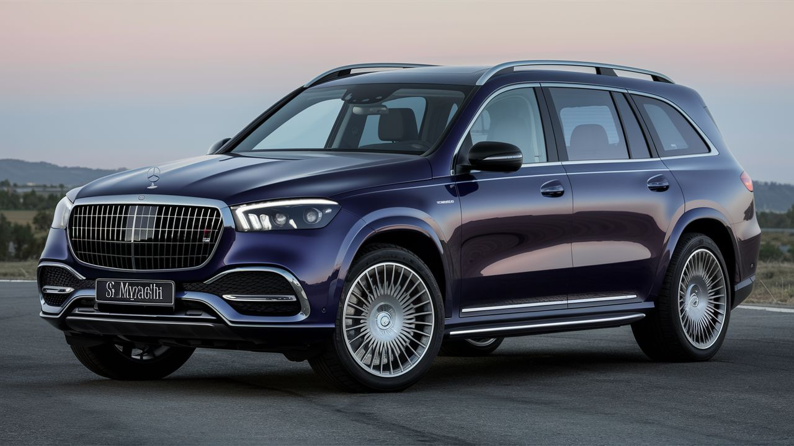
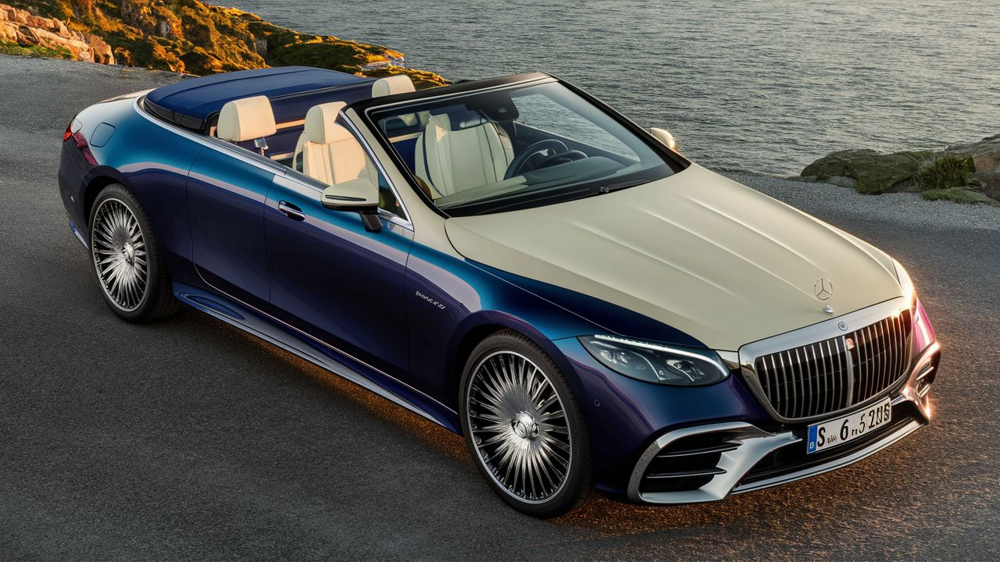
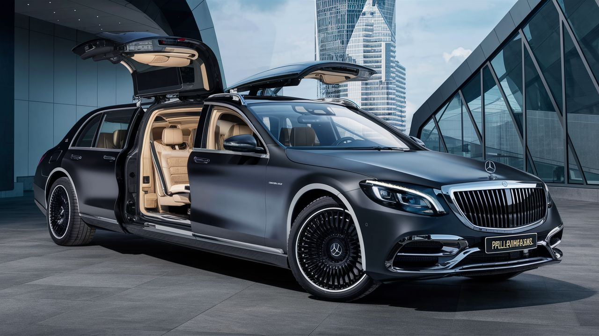

Maybach
Maybach es una marca de automóviles de lujo, perteneciente al Grupo Mercedes-Benz. Con una larga historia en la fabricación de vehículos exclusivos, Maybach se ha destacado por su elegancia, confort y tecnología avanzada. Actualmente, Mercedes-Maybach ofrece una gama de modelos de alta gama como el Clase S Sedán, que combina diseño, confort y seguridad de manera excepcional1 . La marca Mercedes-Maybach se distingue por su atención al detalle, acabados de alta calidad y un enfoque en la comodidad tanto para el conductor como para los pasajeros. Los modelos más recientes como el Mercedes-Maybach Clase S 2021 han introducido innovaciones tecnológicas y características exclusivas que refuerzan su posición como referente en el mercado de automóviles de lujo
Modelos destacados
Mercedes-Maybach GLS

Motor: V8 de 4.0 litros Twin-Turbo Potencia: 550 caballos de fuerza Aceleración (0-100 km/h): 4.8 segundos Características: SUV de lujo, diseño imponente, interior espacioso y lujoso. Precio: Desde aproximadamente $160,000 USD.
Mercedes-Maybach 6 Cabriolet
Motor: Eléctrico Potencia: 750 caballos de fuerza Aceleración (0-100 km/h): Menos de 4 segundos Características: Descapotable de lujo, diseño futurista, tecnología avanzada. Precio: Concepto, no disponible para la venta.
Mercedes-Maybach S 650 Pullman Guard
Motor: V12 de 6.0 litros Twin-Turbo Potencia: 621 caballos de fuerza Aceleración (0-100 km/h): 6.5 segundos Características: Limusina de lujo blindada, seguridad extrema, interior personalizable. Precio: Desde aproximadamente $1.6 millones USD.